ターゲットをあなたの「推し」にする — Jun 2026
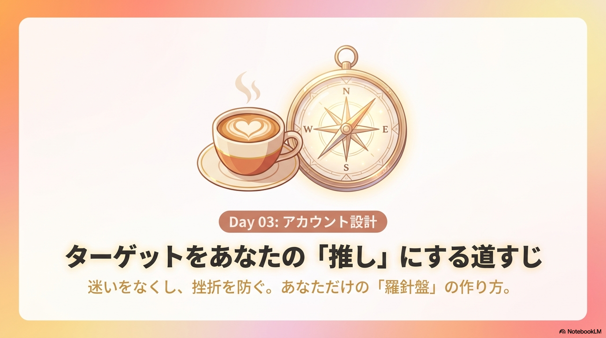
Day 03「アカウント設計」
ターゲットをあなたの「推し」にする道すじ
伸びないアカウントが陥る2大罠を理解する
「自己決定感」に基づくアカウント設計を学ぶ
ターゲット（推し）を1人具体的に決める
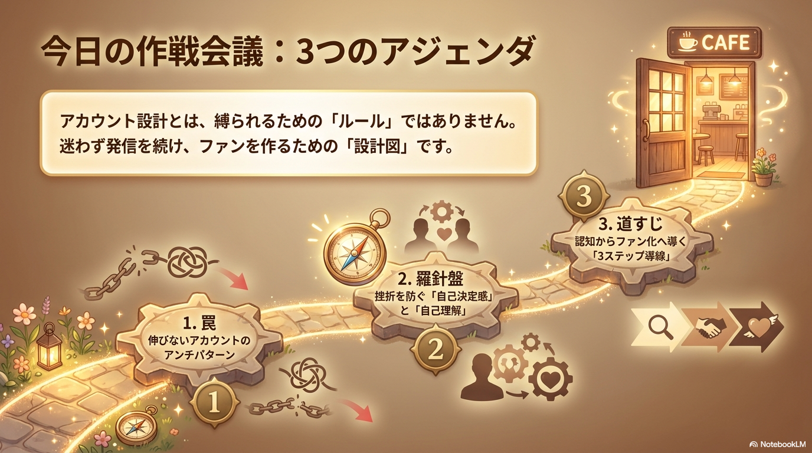
「20代会社員」「在宅ワーク希望者」は属性であり、ターゲットではありません。
最強のターゲットは「過去の自分自身（特定の1人）」です。
深夜、布団の中で泣きながらスマホで検索していた「あの頃の自分」に語りかける投稿が刺さります。
「誰にでも刺さる投稿」は「誰にも刺さらない投稿」になる
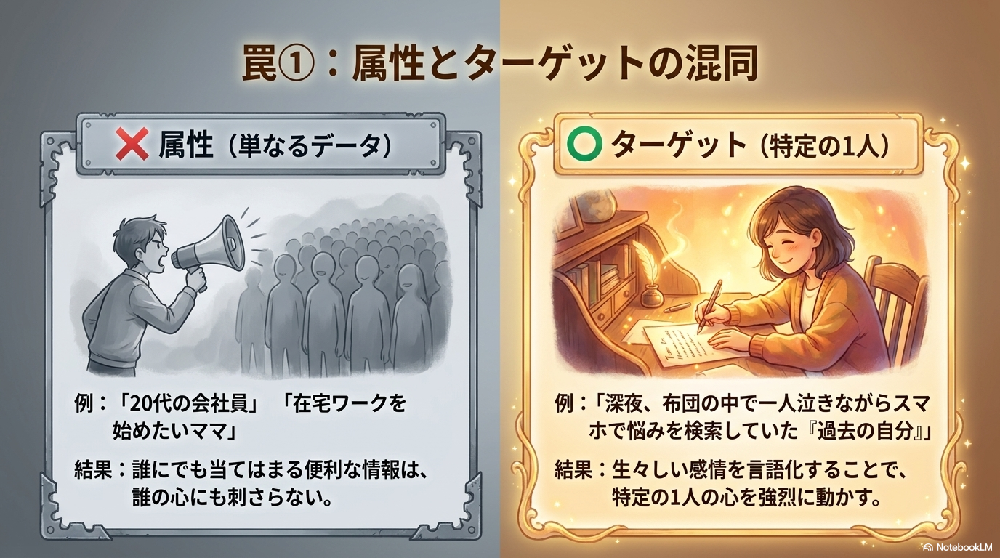
2026年のインスタはAIが投稿・音声・文字を0.1秒でスキャンし、専門ジャンルを自動判定します。
ジャンル外の投稿（日常・趣味・旅行）を混ぜると → AIが混乱 → 拡散がストップします。
解決策： フィード・リールは「専門性100%」で統一。プライベートはストーリーズ限定。
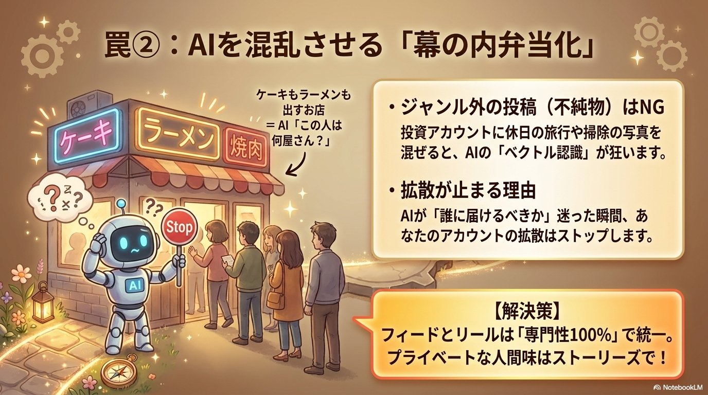
専門ジャンルをAIに正確に伝える3つのハック
アカウント設計の本質は「挫折しないための設計図」を持つことです。
設計図がない場合：運用中に迷いが生じ → モチベーション低下 → 挫折。
設計図がある場合：迷っても立ち戻れる → 継続できる。
設計は一度決めたら終わりではなく、運用しながら随時アップデートするものです。
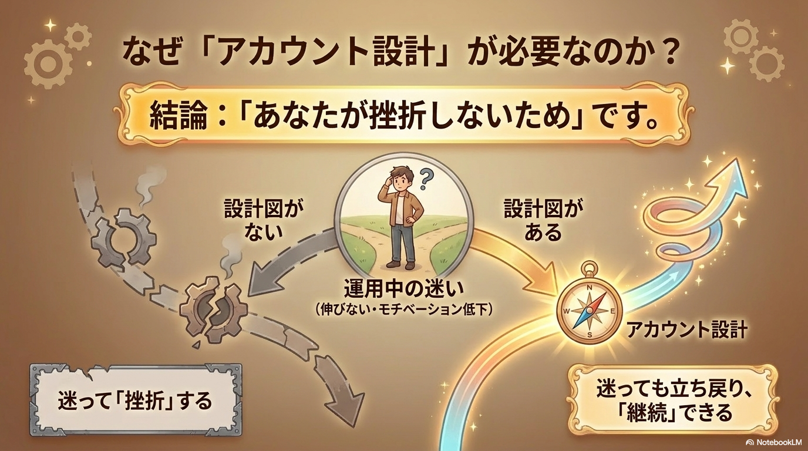
「周りに言われたから」「トレンドだから」→ 失敗すると他責 → 挫折しやすい。
「自分で考えて決断した」→ 失敗しても「次こう改善する」データになる。
迷ったとき・アンチが来たとき・モチベーションが落ちたとき、自己決定感が支えます。
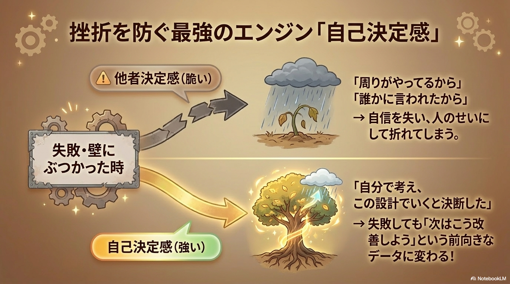
自己理解とは：「自分から見た自分」と「他人から見た自分」のズレをなくすこと。
解像度が上がると → 投稿・画角・台本・編集すべてを客観的に説明できるようになります。
自己理解が深まると → 「ママ向け料理」といった抽象的な発信から、自分だけの「クリアなレンズ（軸）」が言語化されます。
自分の経験・失敗・強みを書き出し、「なぜそれを選んだか」を説明できるようにしましょう。
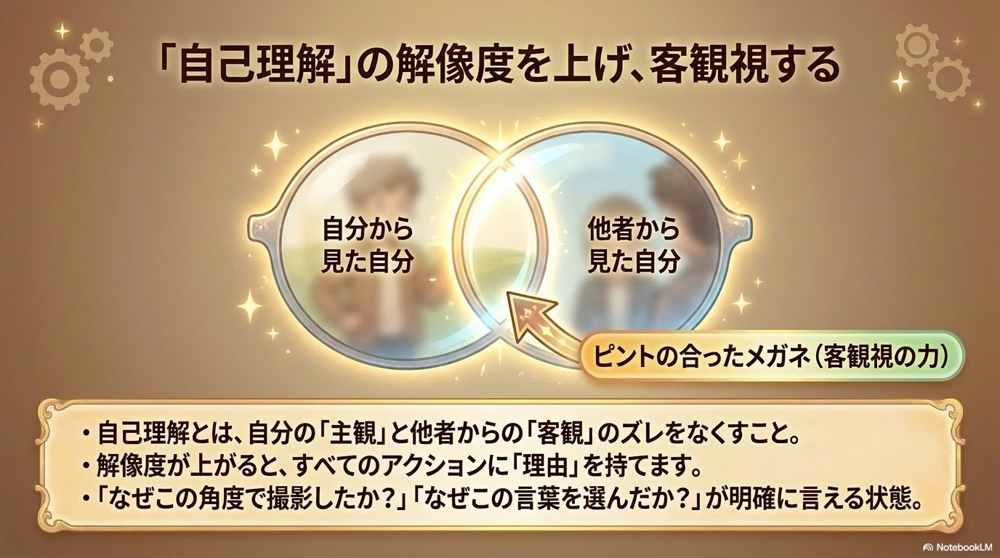
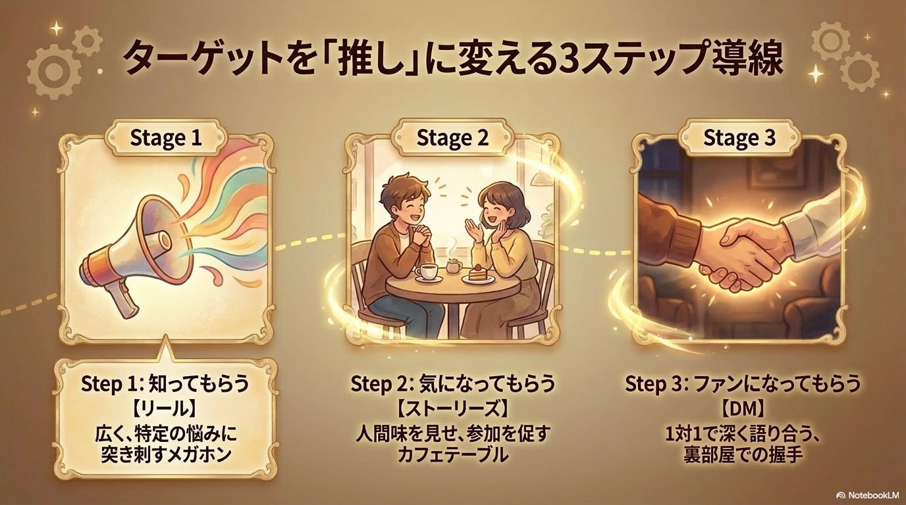
綺麗に飾るより、一番早く「声」を届けることが最優先です。
1本に1週間かけるより、70点で毎週3本打席に立つほうが圧倒的に有利。
70点リールの3ステップ：
最低でも週3回（2日に1回）定期投稿。不定期投稿はフォロワーの記憶から消えます。
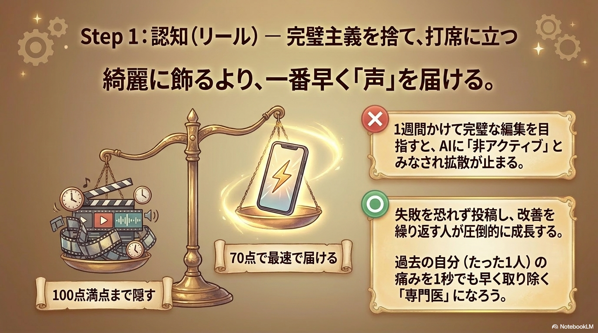
ストーリーズは「専門性の裏にある人間味（弱み）を見せる場所」です。
リール投稿後に「深い思い」「裏側」をストーリーズで共有しましょう。
アンケート機能（スタンプ）の活用で参加ハードルを下げます：
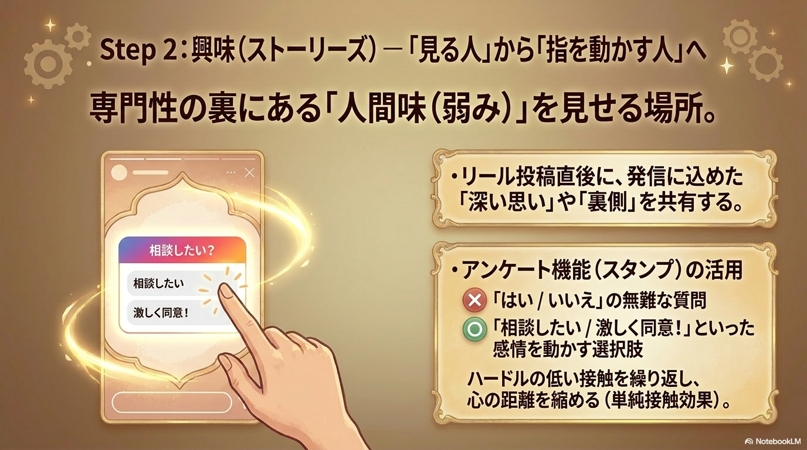
1万人の見物客（いいね・フォロワー数）より、1人の「あなたに救われました」を目指します。
ストーリーズに反応してくれたファンとDMで個別対話。
「なぜフォローしてくれたんですか？」と問い返すことで、信頼関係（ファン）が生まれます。
1対1で向き合うことで、熱量の高い「裏部屋の推し」関係が育ちます。
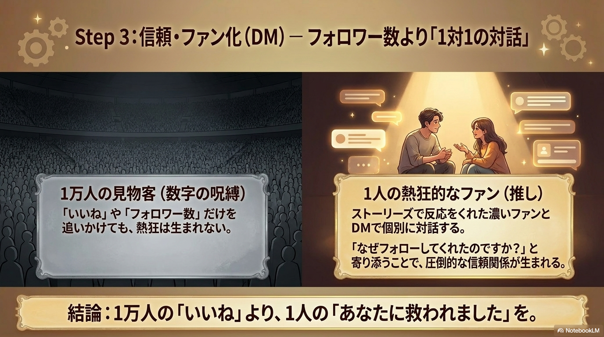
【実習】 過去の自分＝推しを1人、具体的に設計しましょう。
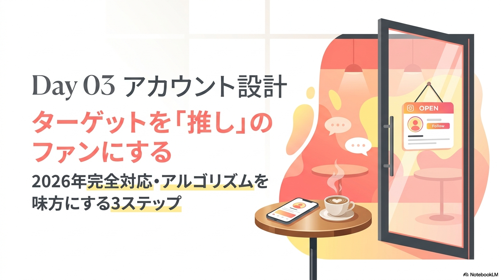
Instagramはもはや「一方的な看板」ではなく、「双方向のカフェ」に変わりつつあります。
「投稿して終わり・いいね重視」→ アルゴリズムに乗せるゲーム
「DMとコメントの往復重視」→ ユーザーと会話するゲーム
評価の最重要指標：いいね ⇒ 保存・シェア・DMやり取り
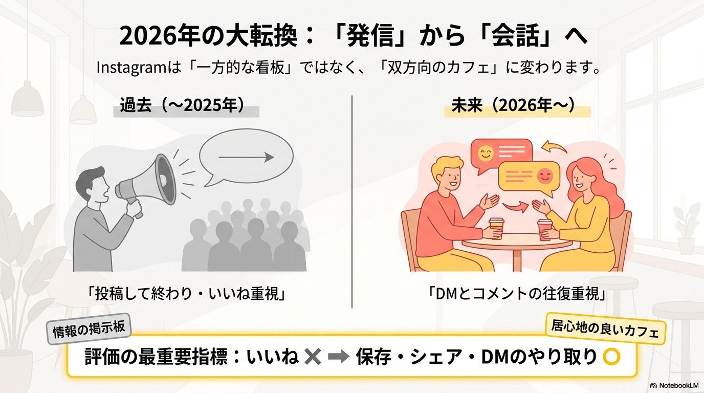
アカウントに「軸」がないと、「なんとなく」で始めて必ず迷子になります。
継続のエンジンは自己理解。3つの要素が重なった中心が「絶対にブレない軸」です。
この軸があるからこそ、「推し」に「何を」1行で言えるようになります。
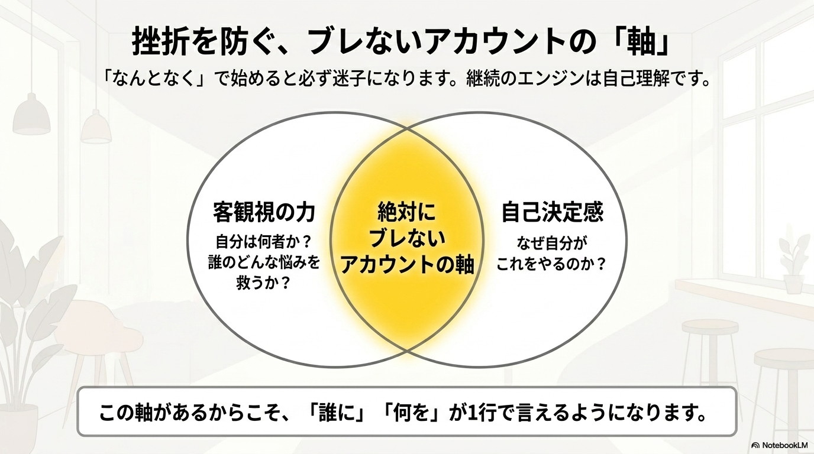
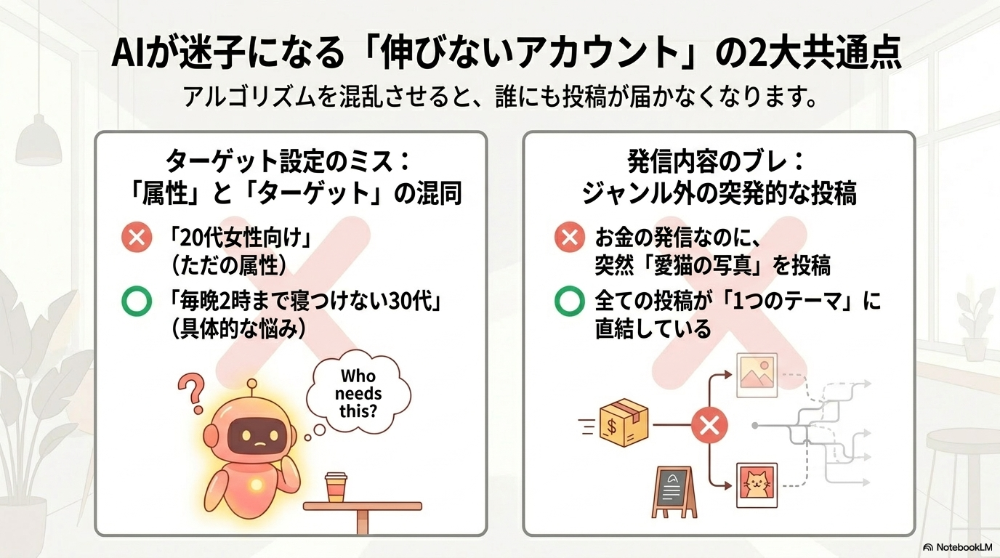
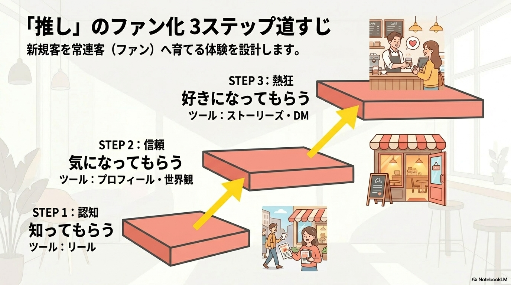
需要のある場所から「少しだけずらす」のが必勝法です。
例「美容師向けの発信」—— フォロワー5万〜10万人のアカウントが5個以上存在するか確認する。
例「白髪に悩む40代専門の美容師向け」—— 自分の強み（自己理解）× 市場の隙間 = 戦う場所を絞る。
100投稿以内または1年以内でフォロワー1万人を達成している競合アカウントがあればチャレンジ可。
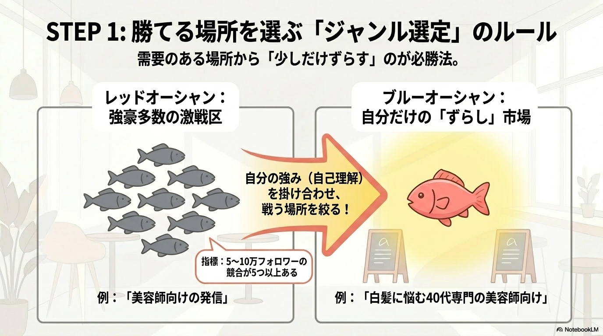
プロフィールは、あなたのお店（アカウント）の看板です。
4つの要素で構成：
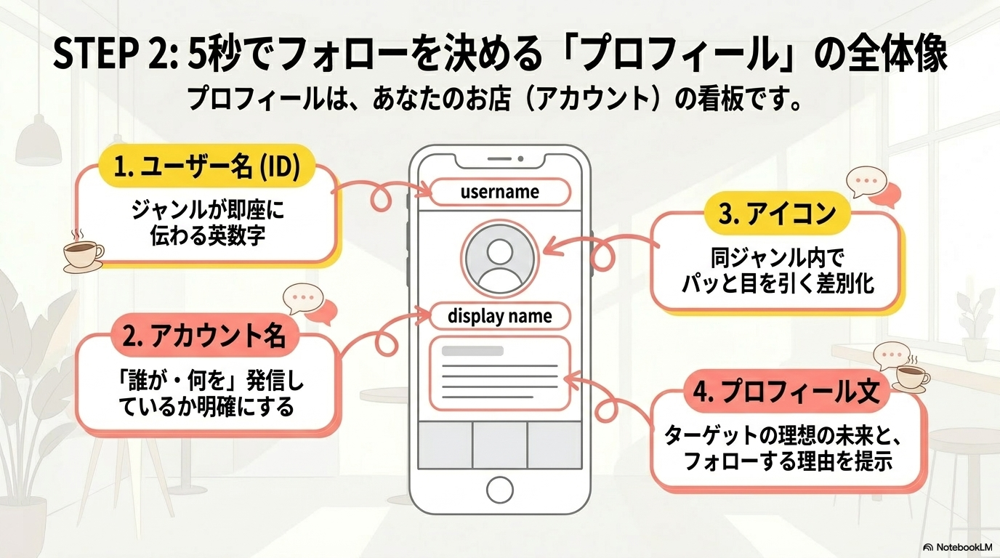
ユーザー名（ID）： `lifehack28`（謎の文字列）→ `saki_money_life`（名前＋ジャンルが明確）
アカウント名：「さき」お悩み解決（何の不明）→「さき」半年で100万貯めた元浪費家OL（具体的な変化＆個性）
アイコン：背景がごちゃごちゃした日常写真 → 背景色（黒や原色）で統一、同ジャンルで差別化
⚠️ プロフィール名の変更は 14日間に2回まで → 初期設定は慎重に！
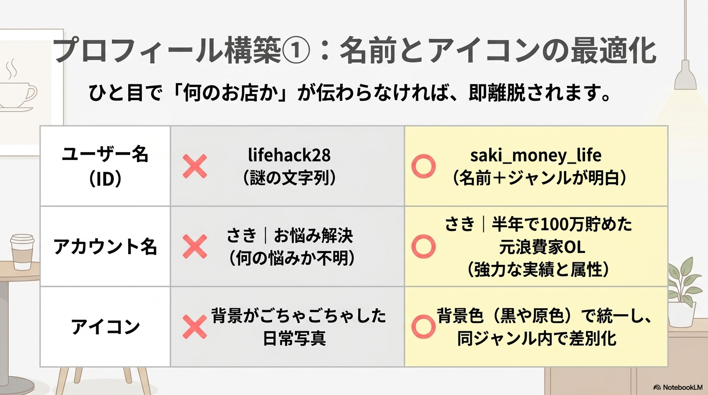
視覚的ノイズを減らし、箇条書きでシンプルに伝えます。
何を発信するアカウント？ → 例：ズボラでもできる簡単貯金術
インパクトと根拠 → 例：口座残高0円 ⇒ 半年で100万円達成
共感が生まれるか？ → 例：手取り18万の元浪費家OL
読者の背中を押すアクション → 例：フォローで「脱・浪費！」限定情報はストーリーズへ
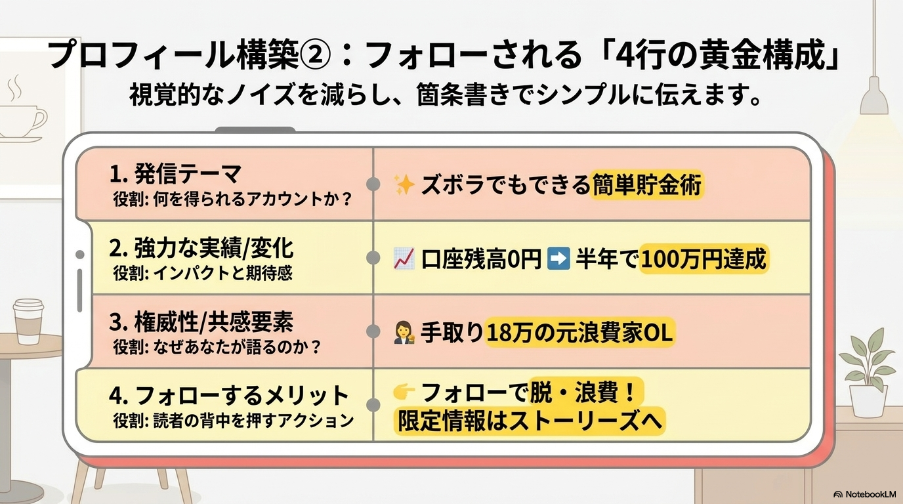
フックの魔法（The 1-Second Hook）： 最初の1秒で自己紹介・痛み・数字・対象を言い切る。
「短時間の質を上げる方法」（一般的すぎる）
「毎朝5時まで寝けない30代だけ見て」（特定の1人に直接語りかける）
品質と世界観：
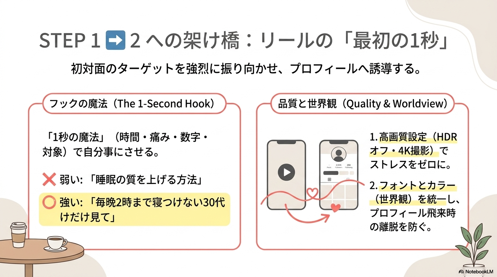
「ありがとう」で終わらせない。コメントは会話のスタートです。
質問返しの型：「ありがとうございます！特にどの部分が一番参考になりましたか？」
この往復が「優良アカウント」としてAIリーチを爆発させる評価につながります。
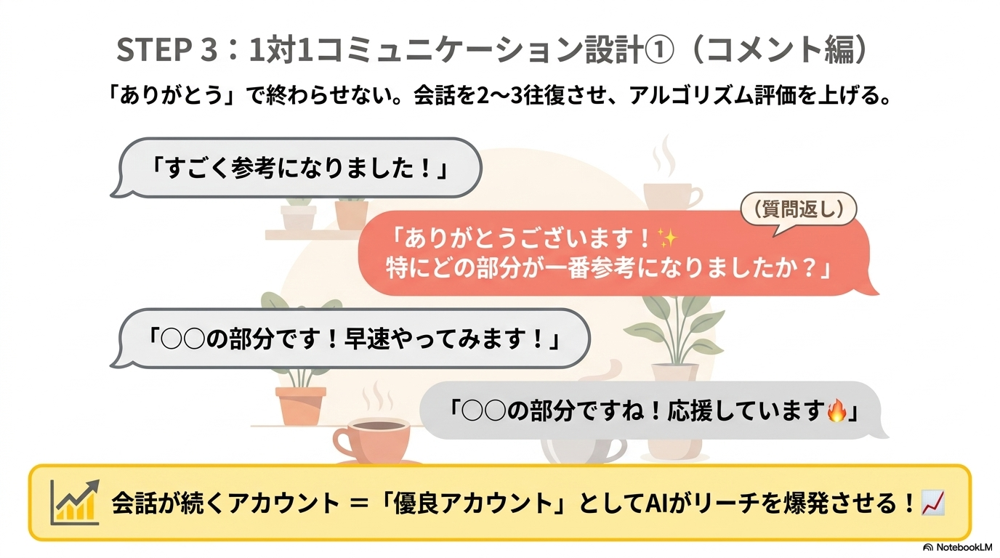
ストーリーズの仕掛け：
DM誘導：
社会的証明（みんなが動いている）＋限定コンテンツで熱狂を生む → 8時間で1000件以上のDM獲得
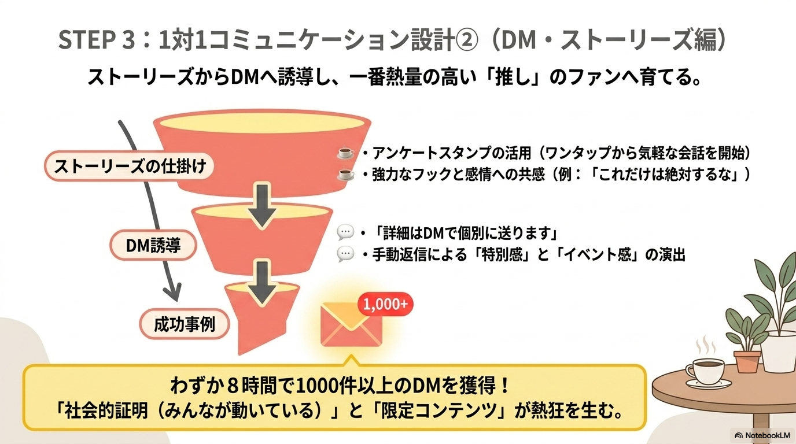
突然のAI誤判断や規約違反による「凍結リスク」は常に存在します。過度な自動化ツールは絶対NG。
メインアカウントを軸に、2つのセーフティネットを作ります：
サブアカウントの準備（万が一の緊急退避場所）
外部リストへの誘導（公式LINE・Instagramのリストに持つ）
「ゼロに戻らない仕組み」こそが長期運用の絶対条件。
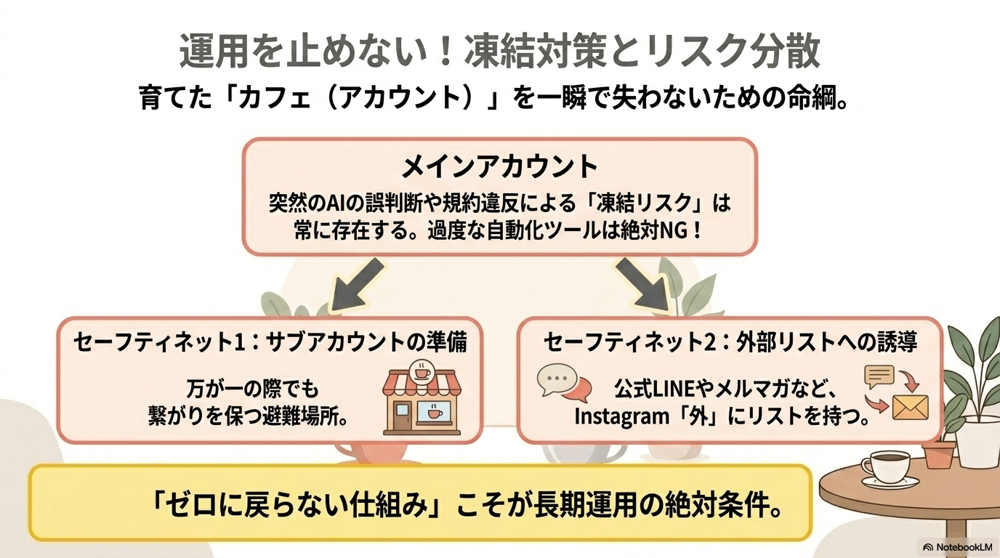
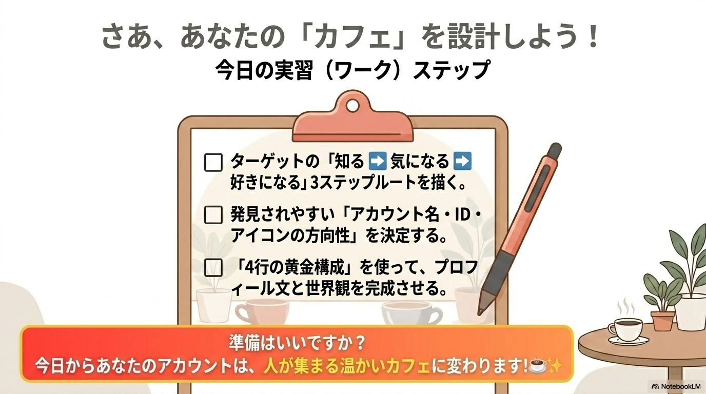
【実習】 自分のアカウントのプロフィール文を4行構成で完成させましょう。
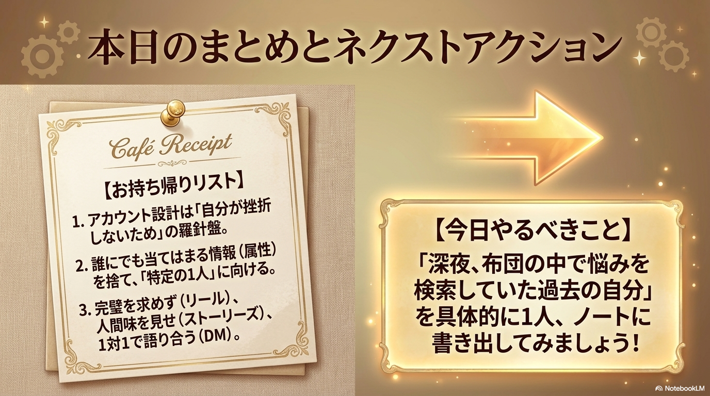